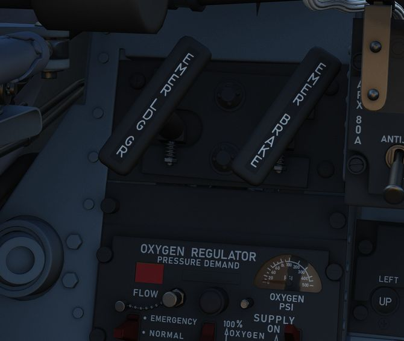
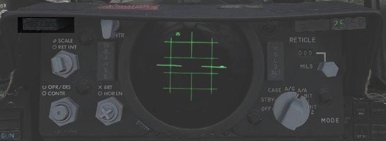
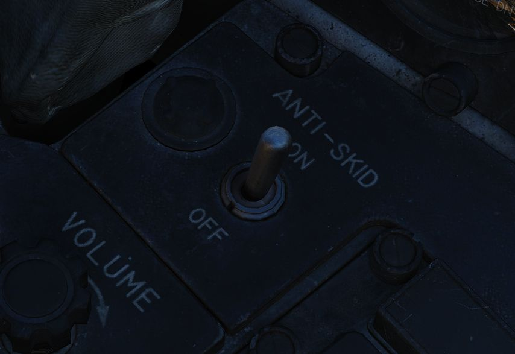
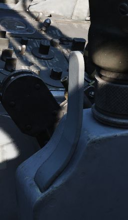
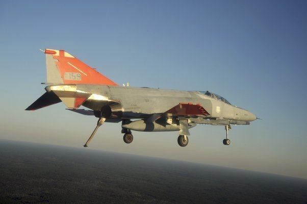
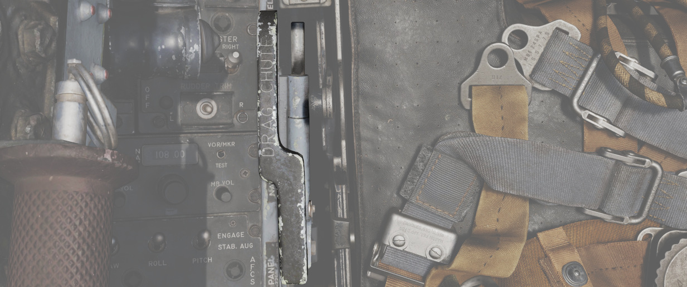
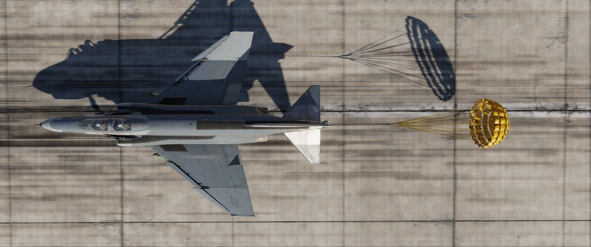

Landing Gear System and Ground Handling Controls
The F-4 Phantom uses a conventional tricycle landing gear arrangement, driven by the Utility hydraulic system. The Landing gear is electronically controlled and hydraulically actuated by the utility hydraulic system. Accidential retraction of the landing gear when the aircraft is on the ground is prevented by safety switches on the main gear. The gear is locked down by internal finger latches which require hydraulic pressure to release. The automatic disable of the nose gear steering and anti-skid system is realized by scissor switches located in the landing gear bays. In the event Utility hydraulics are offline, an emergency extension system using compressed air is available to lower the gear for landing.

Landing Gear Control Handle

The Landing Gear Control Handle is found on the left instrument panel in the front cockpit, with a red wheel-shaped knob for identification.
Landing Gear Emergency Extension Handles

Emergency landing gear extension is driven by a pair of compressed air bottles carrying sufficient charge for lowering the gear one time. The emergency extension is commanded in the front cockpit is performed using the Gear Control Handle; pulling the handle aft in any position releases the compressed air into the landing gear hydraulic system, forcing the gear doors to open and the gear to lower and lock. Extension can also be performed in an emergency from the back seat using a handle on the left sub-panel marked EMERG LDG GEAR. Pulling this handle performs the same action as pulling the front cockpit gear control handle aft.
Landing Gear Warning Lights

In the upper left corner of the front cockpit instrument panel is a WHEELS warning lamp that illuminates when the aircraft is below 230 knots without the landing gear lowered. Selecting the gears down or up when the WHEELS lamp is illuminated will cause a warning lamp installed in the Landing Gear Control handle to light up red.
Landing Gear Position Indicators

Status indicators for the landing gear system are found in both cockpits on the left sub-panel. The indicators are three windows, one for each gear station. The position of the gear are shown in their respective windows with the word UP when up and doors are closed, a barber pole (angled white and black bars) when the gear and doors are in transition either closing or opening, and the illustration of a wheel when the gears are down and locked.
Nose Gear Steering

Nose Gear Steering is actuated using the referenced button on the control stick in either cockpit. Holding the button down permits the crew member to steer the aircraft using the rudder. Steering limit of the nose gear is 70 degrees from centerline in both directions.
Rudder steering becomes effective at approximately 70 knots. At this speed Nose Gear Steering should be disengaged and not be used any further.
Wheel Brakes
Differential steering is provided with weight on wheels using rudder pedal deflection. Assistance in braking performance is provided by an included Anti-Skid System, which engages with the aircraft over 30 knots. Braking function is delayed by the Anti-Skid System on landing until the right main gear has been in contact with the ground for 3 seconds, or the wheels reach 50 knots of rotation.
Anti-Skid System
The electronically controlled anti-skid system provides anti-skid protection at wheel speeds over 30 knots. The system detects the start of a skid and releases the brake pressure in proportion to skid severity. Below 30 knots the anti-skid protection is not available and braking is in direct proportion to the brake pedal movement. The system has a built-in touchdown protection feature that prevents braking until 3 seconds after weight is sensed on the right main gear or wheel spin up to 50 knots. It should be noted that a low coefficient of friction between the runway and tires (as it occurs during Aquaplaning or on icy runways) may lead to the wheels not spinning up or cause them to slow below 30 knots wheel speed after spin-up. In this case the system falsely detects the aircraft speed below 30 knots and reverts to manual braking.
Anti-Skid Control Switch

Next to the oxygen quantity gauge in the front cockpit is the Anti-Skid Control Switch, which is used to turn the system ON or OFF.
Anti-Skid Inoperative Light

Found on the front cockpit left console, the ANTI-SKID INOPERATIVE light will indicate when the Anti-Skid Switch is set to OFF, the Emergency Quick Release Lever is pressed, or there is a system issue.
Emergency Anti-Skid Quick Release Lever

Should the Anti-Skid system appear to malfunction during a rollout, the system can be immediately disengaged by holding down the Quick Release Lever found on the control sticks in either cockpit. This will illuminate ANTI-SKID INOPERATIVE warning.
Emergency Hydraulic Brake System

In the event of a Utility hydraulic system failure, emergency differential braking is provided by pulling the Emergency Brake Handle on the lower left side of the instrument panel in either cockpit. Doing so forces hydraulic pressure from a reserve accumulator, and provides enough power for approximately 10 brake applications.
Arresting Hook System

The Phantom carries a retractable arresting hook for ground stopping in emergency takeoff and landing situations that will reach the strip overrun. Placing the Arresting Hook Handle in the front cockpit into the DOWN position will lower the hook in approximately five seconds. Lowering the hook will illuminate a red warning lamp in the Hook Handle, and illuminate the HOOK DOWN warning on the telelight panel.
The system is not intended to be used for carrier operations.

Drag Chute System

The F-4E has an available Drag Chute to reduce landing roll as necessary. The chute can also be used for spin recovery. Deployment of the chute is performed by rotating the handle found in the front cockpit. The chute is drawn from its door with a smaller pilot chute. Once the chute has deployed and performed sufficient braking action or the aircraft has recovered into a controllable state, the chute is jettisoned by pressing the button and pulling the handle back, then lowering it. This action releases the chute cables and allows it to pull free.
Do not use the Chute in excess of 200 Knots IAS while landing.
For spin recovery the Chute can be used by pushing the stick full forward, putting ailerons and rudder in a neutral position and deploying the chute.

Wing Fold System

The F-4E includes a wing fold system to assist in maintenance and ground handling. Unlike prior models, the wing fold apparatus on the F-4E is un-powered, and requires ground crew members to manually move the outboard panels with the fold control activated to release the locking mechanism.